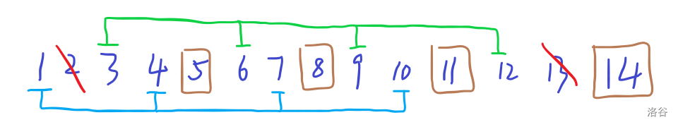

https://github.com/raineblog/whk/edit/main/docs/misc/math/2024-gk-1.md
https://github.com/raineblog/whk/blob/main/docs/misc/math/2024-gk-1.md
2024 新高考一卷
第 19 题
题目描述
设 \(m\) 为正整数，数列 \(a_1,a_2,\dots,a_{4m+2}\) 是公差不为 \(0\) 的等差数列，若从中删去两项 \(a_i\) 和 \(a_j\;(i<j)\) 后剩余的 \(4m\) 项可以被平均分为 \(m\) 组，且每组的 \(4\) 个数都能构成等差数列，则称数列 \(a_1,a_1\dots,a_{4m+2}\) 是 \((i,j)\)—可分数列。
（1）写出所有的 \((i,j)\)，\(1\le i<j\le 6\)，使得数列 \(a_1,a_2\dots,a_6\) 是 \((i,j)\)—可分数列；
（2）当 \(m\ge3\) 时，证明：数列 \(a_1,a_2,\dots,a_{4m+2}\) 是 \((2,13)\)—可分数列；
（3）从 \(1,2,\dots,4m+2\) 中一次任取两个数 \(i\) 和 \(j\;(i<j)\)，记数列 \(a_1,a_2,\dots,a_{4m+2}\) 是 \((i,j)\)—可分数列的概率为 \(P_m\)，证明：\(P_m>\dfrac18\).
思想
这个部分其实数感好（哪怕有一点）就能直接用。
我们知道等差数列 \(a_n=a_{n-1}+d,a_n=a_1+(n-1)d\) 是最基础的公式。
首先考虑，如果一个长度为 \(4\) 的子序列构成等差数列，这个数列有何性质。
容易发现，原数列，
\[
\{a_1,a_1+d,a_1+2d,\dots,a_1+(n-1)d\},n=4m+2
\]
假设选出来的四个数，
\[
\{a_{k_1},a_{k_2},a_{k_3},a_{k_4}\},k_1<k_2<k_3<k_4
\]
构成等差数列，那么根据递归式，
\[
a_{k_t}=a_{k_{t'}}+d'\\
a_1+(k_t-1)d=a_1+(k_{t'}-1)d+d'\\
(k_t-k_{t'})d=d'\\
k_t-k_{t'}={d'\over d}
\]
其中 \(t'\) 表示 \(t\) 的后继，即 \(x'=x\)（但是 \(d'\) 真的只是一撇）。
我们发现到，下标也是一组等差数列，即隔着相同的位（称为步长）选择。
铺垫
其实就是第一第二问。
第一问，注意到四个数只能连起来选，
因为如果不连起来，就至少需要 \(7\) 位，而只有 \(6\) 个数。
因此，答案为，\((1,2),(5,6),(1,6)\)。
第二问，注意到如果 \(m=3\) 我们可以这么选择，

而，若 \(m>3\) 则直接在这个基础上，后面加入若干组连续编组的四个即可。
注意到我们这种构造只是一组可行性构造，因为我们没有用到前 \(14\) 个与后面的匹配。
发现
考虑第二问的思想，我们在原数组后面加上四位，来拓展。
那我们容易想到，也可以在原数组前面加上四位，来拓展。
注意到这两种其实是有重复的，重复在于两者交错的位置，会重复计算。
而考虑第一问，我们知道，任何一个数列，选择前两个，后两个，首位，都是可以的。
而这里面又有重复了，注意到选择前两个、后两个是包含在后、前拓展里面的。
因此，我们得到了一个构造下界的方法，
设 \(\mathit{ans}_m\) 表示从 \(1\sim4m+2\) 中选择，得到的确切可行数，
那么我们设 \(b_n\) 表示这么选择可以得到的这个下界，那么显然，
\[
b_0=1,b_1=3\\
b_n=2b_{n-1}-b_{n-2}+1
\]
我们先不算出来具体的结果，大体估计一下，
\[
b_2=6,b_3=10,b_4=15
\]
我们取第四项，一共有，
\[
{4m+2\choose2}=(2m+1)(4m+1)=9\times17=153
\]
种情况，概率，
\[
P_m={15\over153}<{1\over8}
\]
显然是不可行的。
继续
我们发现，我们这种构造甚至没有包含第二问中要求证明的东西，考虑加强。
注意到我们在第二问中，选择了步长为 \(3\) 的，去覆盖除了 \(2\) 以外的方格，
最终我们在 \(13\) 的位置空出来了，我们考虑类似的处理，使用其他步长来填充，
步长为 \(2\)，
\[
1\ 2\ 3\ 4\ 5\ 6\ 7\ 8\ 9\ 10\ 11\ 12\ 13\ 14\ 15\ 16\ 17\ 18\ 19\ 20\\
{\color{red}\boxed1}\ 2\ {\color{red}\boxed3}\ 4\ {\color{red}\boxed5}\ 6\ {\color{red}\boxed7}\ 8\ 9\ 10\ 11\ 12\ 13\ 14\ 15\ 16\ 17\ 18\ 19\ 20\\
\boxed1\ 2\ \boxed3\ {\color{red}\boxed4}\ \boxed5\ {\color{red}\boxed6}\ \boxed7\ {\color{red}\boxed8}\ 9\ {\color{red}\boxed{10}}\ 11\ 12\ 13\ 14\ 15\ 16\ 17\ 18\ 19\ 20
\]
我们空出来了 \(\boxed{9}\)。
步长为 \(3\)，空出来了 \(\boxed{13}\)。
步长为 \(4\)，
\[
\def\crb#1{{\color{red}\boxed{#1}}}
\def\rb#1{\boxed{#1}}
\begin{array}{c}
1\ 2\ 3\ 4\ 5\ 6\ 7\ 8\ 9\ 10\ 11\ 12\ 13\ 14\ 15\ 16\ 17\ 18\ 19\ 20\\
\crb1\ 2\ 3\ 4\ \crb5\ 6\ 7\ 8\ \crb9\ 10\ 11\ 12\ \crb{13}\ 14\ 15\ 16\ 17\ 18\ 19\ 20\\
\rb1\ 2\ \crb3\ 4\ \rb5\ 6\ \crb7\ 8\ \rb9\ 10\ \crb{11}\ 12\ \rb{13}\ 14\ \crb{15}\ 16\ 17\ 18\ 19\ 20\\
\rb1\ 2\ \rb3\ \crb4\ \rb5\ 6\ \rb7\ \crb8\ \rb9\ 10\ \rb{11}\ \crb{12}\ \rb{13}\ 14\ \rb{15}\ \crb{16}\ 17\ 18\ 19\ 20\\
\rb1\ 2\ \rb3\ \rb4\ \rb5\ \crb6\ \rb7\ \rb8\ \rb9\ \crb{10}\ \rb{11}\ \rb{12}\ \rb{13}\ \crb{14}\ \rb{15}\ \rb{16}\ 17\ \crb{18}\ 19\ 20\\
\end{array}
\]
我们空出来了 \(\boxed{17}\)。
此时，我们已经可以猜结论了，选步长为 \(k\)，空出来 \(4k+1\)。
而至于比较严谨的证明，发现我们空出来的 \(2\)，
造成了本应在 \(2\) 处的四个格子，向后移动了 \(k\) 位，那么多余所对的，自然就是 \(4k+1\)。
由此，我们通过不断增加 \(k\)，使得对于 \(m\ge2\) 时，均可以增加一个这个贡献。
于是，原递归式进阶，
\[
b_0=1,b_1=3\\
b_n=2b_{n-1}-b_{n-2}+2
\]
算几项，发现都符合要求，我们考虑严谨证明。
结束
我们有，
\[
b_0=1,b_1=3\\
b_n=2b_{n-1}-b_{n-2}+2
\]
我们知道，
\[
\mathit{ans}_n\ge b_n
\]
试证明，
\[
\mathit{ans}_n\Big/{4m+2\choose 2}>{1\over8}
\]
只需证，
\[
b_n\Big/{4m+2\choose 2}>{1\over8}
\]
考虑直接求出 \(b_n\) 通项。
我们直接照猫画虎，用特征根法求解，
\[
b_n=2b_{n-1}-b_{n-2}+2\\
b_{n+1}=2b_n-b_{n-1}+2
\]
相减，
\[
b_{n+1}-b_n=2b_n-2b_{n-1}-b_{n-1}+b_{n-2}\\
b_{n+1}=3b_n-3b_{n-1}+b_{n-2}
\]
特征方程，
\[
q^3=3q^2-3q+1\\
q^3-3q^2+3q-1=0
\]
注意到由二项式定理，这个其实就是，
\[
(q-1)^3=0
\]
于是，特征根，
\[
q=1
\]
注意到只有一个解，因此答案形如，
\[
b_n=\lambda n^2+\mu n+\gamma
\]
我们带入几个值，首先，
\[
b_2=2b_1-b_0+2=7
\]
于是，
\[
\begin{cases}
b_0&=\gamma&=1\\
b_1&=\lambda+\mu+\gamma&=3\\
b_2&=4\lambda+2\mu+\gamma&=7
\end{cases}
\]
解得，
\[
\begin{cases}
\lambda&=1\\
\mu&=1\\
\gamma&=1
\end{cases}
\]
即，
\[
b_n=n^2+n+1
\]
于是，所证，
\[
b_n\Big/{4m+2\choose 2}>{1\over8}\\
{n^2+n+1\over(2n+1)(4n+1)}>{1\over8}\\
8n^2+8n+8>8n^2+6n+1
\]
显然成立。Q.E.D.
本页面最近更新：正在加载中，更新历史。
编辑页面：在 GitHub 上编辑此页！
本页面贡献者：RainPPR。
{kind=link}